7. Atsitiktiniai dydžiai ir skirstiniai
7.1 Apie pratybas
Pratybų metu mokysimės (1) turimiems duomenims parinkti labiausiai tinkantį tikimybinį modelį (skirstinio tipą ir tinkamiausius jo parametrus) bei (2) spręsti tikimybinius uždavinius.
Užsiėmimo tikslas – išmokti duomenims parinkti tinkamą teorinį atsitiktinio dydžio modelį (skirstinį) bei susipažinti su skirstinių taikymo principais tikimybiniams uždaviniams spręsti.
7.2 Tikimybių teorijos elementai
Taikant aprašomosios statistikos metodus galima aprašyti bet kokią imtį (nekreipiant dėmesio į atsitiktinumą, atsirandantį sudarant imtį) ar net visą generalinę aibę (GA). Tačiau norint pagal imties duomenis daryti statistines išvadas (išvadas apie visą GA) būtina atsižvelgti į šį atsitiktinumą. Statistinių išvadų darymo metodai grindžiami tikimybių teorija. Tam, kad galiotų tikimybių teorijos dėsniai, imtis turi būti sudaryta tinkamai – tikimybiniu būdu, t. y., kiekvienam objektui tikimybė patekti į imtį turi būti vienoda, ir teoriškai idealiu laikomas – visiškai atsitiktinis grąžintinis imties sudarymo būdas.
Šiame kurse dėstomi statistinių išvadų darymo metodai sukurti tik visiškai atsitiktinėms imtims ir tinka tik tada, jei imtis yra tikimybinė.
7.2.1 Tikimybiniai eksperimentai ir įvykiai
Viena iš tikimybių teorijos sąvokų yra tikimybinis eksperimentas – tai toks bandymas, kuris gali turėti keletą atsitiktinių baigčių, ir negalima iš anksto pasakyti, kuri iš galimų baigčių įvyks šį kartą. Kiekvieno tikimybinio eksperimento rezultatas vadinamas (atsitiktiniu) įvykiu. Pvz., bandymas – auginamos ląstelės, įvykis – užaugusių ląstelių skaičius; bandymas – tiriama kūdikio lytis, įvykis – lytis yra mergaitė; bandymas – pasėjama 10 sėklų, įvykis – sudygo 8 sėklos; bandymas – vykdoma apklausa, įvykis – 91% studentų atsakė, kad jau atliko namų darbus; bandymas – ieškomas organų donoras iki tol, kol bus rastas tinkamas, įvykis (jei donoras rastas iš antro karto): pirmas donoras – netinkamas, antras – tinkamas; bandymas – sportininkas šauna į taikinį, įvykis – balų skaičius, surinktas pagal balų skaičiavimo taisykles.
Įvykiai gali būti elementarieji (tokie, kurie negali būti suskaidyti į mažesnes dalis, pvz., viena sėkla gali arba sudygti, arba nesudygti) ir sudėtiniai (susidėti iš kelių elementariųjų įvykių, pvz., pasodinus 10 sėklų, kiekvienos iš jų sudygimas/nesudygimas – elementarusis įvykis, o bendras viso eksperimento rezultatas – sudygusių sėklų skaičius – sudėtinis įvykis).
7.2.2 Atsitiktinis dydis
Kita tikimybių teorijos sąvoka – atsitiktinis dydis (trumpinsime ats.d., angl. random variable) yra toks dydis, kuris po bandymo įgyja vieną konkrečią iš anksto nežinomą skaitinę reikšmę. Tam, kad atsitiktinio dydžio reikšmė taptų skaitinė, gali būti panaudota perkodavimo ar perskaičiavimo taisyklė, pagal kurią atsitiktiniam įvykiui priskiriama skaitinė reikšmė. Jei bandymo rezultatas nėra išreikštas kaip skaičius – tai nėra atsitiktinis dydis. Keletas ats.d. pavyzdžių:
- tiriame augalų aukštį, ats.d. – aukštis centimetrais;
- ištiriame n baltymo molekulių, ats.d. – pažeistų molekulių skaičius;
- pasėjame 20 sėklų, ats.d. – sudygusių sėklų skaičius po 3 dienų (įvykis – sėkla sudygo ar nesudygo – nėra ats.d., nes tai ne skaičius, o pavertimas į ats.d. – suskaičiavimas, kiek sėklų sudygo);
- ieškome naftos ir darome gręžinius, ats.d. – gręžinių, kuriuose neradome naftos, skaičius iki tol, kol padarėme gręžinį, kuriame atradome naftos (vėl kategorinio tipo – rado/nerado naftos – įvykiui pritaikoma tam tikra taisyklė, kaip paversti į skaičių);
- tiriame paukštį ir skaičiuojame parazitus, ats.d. – surastų parazitų skaičius.
Atsitiktiniai dydžiai dažnai žymimi didžiosiomis raidėmis, (pvz., \(X\), tarkim ilgis), o jų įgyjamos reikšmės – mažosiomis (\(x\), tarkim 6 cm). Atsitiktinio dydžio vidurkis žymimas \(\mathbf{E}X\), o dispersija – \(\mathbf{D}X\).
Skaitiniai kintamieji būna tolydieji arba diskretieji, todėl ir atsitiktiniai dydžiai būna diskretieji arba tolydieji.
Pav. 7.1: Ar įžvelgiate analogiją tarp diskrečiųjų ir tolydžiųjų ats.d. bei diskrečiųjų \((A)\) ir tolydžiųjų, gradientinių \((B)\) spalvų skalių?
Daugiau apie atsitiktinius dydžius galite sužinoti šiame video paskaitų cikle (anglų kalba su subtitrais, kurių reikia ieškoti kortelėje „Transcript“): nuoroda . Visiems rekomenduoju peržiūrėti bent pirmąją dalį, kurios trukmė ~ 6 min.
7.2.3 Tikimybė
Tikimybė (angl. probability) – skaitinis atsitiktinės įvykio baigties galimybės matas. Kinta nuo 0 (negalimas įvykis, kuris neįvyks) iki 1 (būtinasis įvykis, kuris tikrai įvyks). Tikimybė dažnai žymima kaip funkcija \(P\). Jei \(A\) yra mus dominantis įvykis, sakykime, \(A\) – gims mergaitė, tada užrašas „\(P(A)\)“ nurodo tikimybę, kad gims mergaitė, pvz., \(P(A) = 0.49\). Užrašas \(P(X = x) = 0.1\) reikštų, kad tikimybė, jog atsitiktinis dydis (\(X\) didžioji, sakykime, kolonijų skaičius) bus lygus konkrečiam skaičiui (\(x\) mažoji, tarkim, 20), lygi 0.1, t. y., 10%. Tikimybė gali būti užrašoma kaip skaičius tarp 0 ir 1 arba procentine išraiška nuo 0% iki 100%.
Apie terminų vartojimą: terminas „tikimybė“ yra tinkamesnis kalbant apie generalinę aibę. O kalbant apie imties duomenis, tinkamesnis atitikmuo būtų „santykinis dažnis“.
7.2.4 Skirstiniai
Atsitiktinio dydžio reikšmių skirstinys (angl. probability distribution), arba tiesiog skirstinys, – yra būdas arba taisyklė, susiejanti atsitiktinio dydžio reikšmes su jų įgijimo tikimybėmis. Skirstinys gali būti pateiktas kaip formulė, lentelė arba grafikas. Priklausomai nuo ats.d. tipo, skirstiniai skirstomi į diskrečiuosius ir tolydžiuosius.
Kiekvienas skirstinys gali būti pateiktas dviem formomis (pav. 7.2):
- jei skirstinys diskretusis:
- tikimybių (tikimybės masės) funkcija (pvz., santykinių dažnių lentelė) – parodo konkrečios reikšmės įgijimo tikimybę, kuri įprastai žymima \(P(X = x)\);
- diskrečioji pasiskirstymo funkcija (pvz., sukauptųjų santykinių dažnių lentelė) – parodo tikimybę įgyti reikšmę, ne didesnę už kitą konkrečią reikšmę, vadinamą kvantiliu. Pasiskirstymo funkcija įprastai žymima \(F(x)\), kur \(x\) yra kvantilis, ir yra lygi išraiškai \(P(X \le x)\).
- jei skirstinys tolydusis:
- tikimybės tankio funkcija (ar pamenate branduolių tankio grafiką?) – pasirinktame ats.d. reikšmių intervale plotas po šia kreive parodo tikimybę ats.d. reikšmei patekti į intervalą;
- tolydžioji pasiskirstymo funkcija – analogiškai kaip ir diskrečiojo skirstinio atveju, parodo tikimybę įgyti reikšmę, ne didesnę už kitą konkrečią reikšmę, vadinamą kvantiliu, taip pat žymima \(F(x)\) ir yra lygi \(P(X \le x)\).
Trumpas matematinių užrašų, tokių kaip \(F(x)\), \(P(X=x)\), \(P(X<x)\), paaiškinimas. Sakykime, kad atliekame kūdikių svorio tyrimą. Užrašas, \(F(3~kg)\) atitiktų užrašą \(P(Svoris \le 3~kg)\) bei sakinį „tikimybė, kad kūdikio svoris, tiriamasis atsitiktinis dydis \(X\), bus ne didesnis už \(3~kg\), t. y., už konkretų skaičių \(x\)“.
Pav. 7.2: Diskrečiųjų ir tolydžiųjų skirstinių formos ir paaiškinimai, kaip jas atpažinti. Taškai žymi konkrečias ats.d. reikšmes ir su jomis susietas tikimybes.
Pav. 7.3: Sąsaja tarp tolydžiojo ats.d. \(X\) kvantilio \(x_\alpha\), su juo susietos tikimybės \(\alpha\) bei tikimybės tankio ir tikimybės pasiskirstymo grafikų. Plotas po tankio grafiko kreive tam tikrame intervale nurodo tikimybę, kuri matoma ir pasiskirstymo funkcijos y ašyje. Plotas po visa tankio kreive lygus 1, tokio dydžio yra ir maksimali pasiskirstymo funkcijos y ašies reikšmė. Vaizduojamas normaliojo skirstinio pavyzdys.
Pav. 7.4: Sąsaja tarp diskrečiojo ats.d. \(X\) kvantilio \(x_{\alpha}\), su juo susietos tikimybės \(\alpha\) bei tikimybių (masės) ir tikimybės pasiskirstymo grafikų. Vaizduojamas binominio skirstinio pavyzdys.
Atsitiktiniai dydžiai įprastai gali būti aprašyti vienu iš kelių žinomų teorinių skirstinių, kurie modeliuoja tam tikrus procesus. Pvz., tolydieji ats.d. gali būti aprašomi normaliuoju (Gauso), log-normaliuoju, diskretieji – Puasono, binominiu, geometriniu, neigiamu binominiu ir kitais. Į teorinių skirstinių naudojimą galima žiūrėti kaip į mokslinį įrankį, skirtą įvertinti tikimybinių reiškinių neapibrėžtumą, apskaičiuoti paklaidas, analizuoti procesų kilmę (ar atitinka modelį, ar ne), atlikti kitokius skaičiavimus, kurie leistų priimti statistiniu modeliavimu pagrįstus sprendimus. Tarkime, jei modelis imties duomenims tinka pakankamai gerai, tada tarsi teigiama, kad modeliu aprašomas skirstinys būdingas generalinei aibei ir pagal jį galima daryti prognozes.
Skirstiniai gali būti taikomi tokiose srityse, kaip:
- tikimybinių reiškinių, atsitiktinių dydžių modeliavimas (pvz., apskaičiuoti, kokia tikimybė, kad jūs turėsite bent 2 vaikus);
- pasikliauties intervalų sudarymas (pvz., iš apklausos duomenų reikia įvertinti, kuri visos Lietuvos vyrų reguliariai užsiima aktyvia fizine veikla);
- statistinių hipotezių tikrinimas (pvz., iš tyrimo duomenų reikia nuspręsti, kas Vilniaus universiteto studentams labiau pakelia nuotaiką: plytelė šokolado ar 15 minučių bėgimo).
Šio užsiėmimo metu gilinsimės į pirmąją taikymo sritį. Keliuose tolimesniuose skyriuose apžvelgsime kelis dažniausiai naudojamus tikimybinius modelius.
7.3 Tikimybiniai atsitiktinių dydžių modeliai
Šiame skyriuje panagrinėsime kelis žinomus teorinius skirstinius, kurie gali būti naudojami tikimybi6kai apra6yti tam tikrų bandymų rezultatus.
7.3.1 Binominis skirstinys
Keletas terminų, susijusių su diskrečiaisiais skirstiniais: sėkmė (arba sėkmingas bandymas) – toks rezultatas, kai įvyko mus dominantis/mums palankus įvykis; nesėkmė (arba nesėkmingas bandymas) – toks rezultatas, kai neįvyko mus dominantis/mums palankus įvykis.
Sakykime, kad vykdome bandymą tokiomis sąlygomis:
- atliekant bandymą galimos tik 2 baigtys, pvz., pavyko / nepavyko, sėkmė / nesėkmė, vyras / moteris, sudygo / nesudygo, skaičius / herbas;
- bandymus kartojame \(n\) kartų \((n = ~1, ~2, ~3, ~...)\): pvz., iš viso yra \(n\) objektų, gali įvykti \(n\) įvykių ir pan.
- vieno bandymo sėkmės tikimybė yra žinoma ir lygi \(p\) \((0<p<1)\);
- tikimybė \(p\) yra pastovi visų bandymų metu;
- kiekvieno bandymo rezultatai yra tarpusavyje nepriklausomi.
Tokiu atveju ats.d. \(X\) – sėkmingų bandymų skaičius iš \(n\) galimų – bus diskretusis \((k = 0,~ 1,~ 2,~ ... ,~ n)\), pasiskirstęs pagal binominį dėsnį ir žymimas:
\[\begin{equation} X \sim \mathcal{B}(n, ~ p) \tag{7.1} \end{equation}\]Konkrečios reikšmės įgijimo tikimybė aprašoma lygtimi:
\[\begin{equation} P(X = k) = \binom{n}{k}p^kq^{n-k} \tag{7.2} \end{equation}\]Čia \(q = (1-p)\), o \(\binom{n}{k} = \frac{n!}{k!(n-k)!}\) – binominis koeficientas.
Matematinės binominio ats.d. savybės (vidurkis ir dispersija):
\[\begin{equation} \mathbf{E}X = np, ~~~ \mathbf{D}X = npq \tag{7.3} \end{equation}\]Biologinis pavyzdys: ats.d. – sudygusių sėklų skaičius, kai pasėjame 20.
Jei \(X\) yra binominis ats.d., įprastai skirstinio parametrą \(n\) žinome (arba numanome) – nes žinome, kiek kartų atliktas eksperimentas. Mums dažniausiai reikia nustatyti sėkmės tikimybę \(p\).
Atkreipkite dėmesį, kad binominio skirstinio parametras \(n\) nėra tas pats, kas imties dydis, kuris dažnai statistikoje žymimas ta pačia raide. Šio žymėjimo nekeičiau, nes jis plačiai paplitęs ir naudojamas programose, kuriomis atliksime skaičiavimus. Jei gerai išstudijuosite binominį modelį, sunkumų neturėtų kilti.
7.3.2 Puasono skirstinys
Sakykime, kad vykdome bandymą tokiomis sąlygomis:
- atliekant bandymą skaičiuojami įvykiai, tenkantys vienam vienetui: objektui arba laiko, ilgio, ploto, erdvės ar kitokiam vienetui;
- vidutinis įvykių skaičius \((\lambda)\) šiam vienetui yra žinomas;
- maksimalus galimas įvykių skaičius nėra apribotas;
- tikimybė, kad įvyks įvykis, ir vidutinis įvykių skaičius yra pastovūs ir nekinta;
- įvykiai tarpusavyje yra nepriklausomi.
Tokiu atveju ats.d. \(X\) – įvykių skaičius, tenkantis objektui, laiko, erdvės ar pan. vienetui – yra diskretusis \((k = 0,~ 1,~ 2,~ ... )\), skirstosi pagal Puasono modelį ir žymimas:
\[\begin{equation} X \sim \mathcal{P}(\lambda) \tag{7.4} \end{equation}\]Konkrečios reikšmės įgijimo tikimybė aprašoma lygtimi:
\[\begin{equation} P(X = k) = \frac{ \lambda^k }{k!}e^{-\lambda} \tag{7.5} \end{equation}\]Puasono ats.d. savybės (vidurkis ir dispersija):
\[\begin{equation} \mathbf{E}X = \lambda, ~~~ \mathbf{D}X = \lambda \tag{7.6} \end{equation}\]Parametras \(\lambda\) yra kartu ir vidurkis, ir dispersija.
Biologiniai pavyzdžiai:
- ats.d. – mutacijų, įvykstančių vienoje chromosomoje, skaičius.
- ats.d. – retos ligos atvejų, įvykstančių populiacijoje per vienerius metus, skaičius.
7.3.3 Binominio skirstinio aproksimacija Puasono skirstiniu
Sakykime, kad savo tyrimo rezultatą galime aprašyti binominio skirstinio modeliu \(X \sim \mathcal{B}(n, ~ p)\), tačiau \(n\) palyginus su \(p\) – labai didelis (tarkime, \(n > 1000\)), o \(p\) – labai mažas (tarkime, \(p<0,001\)). Tokiu atveju binominio skirstinio tikimybes pakankamai gerai atitinka Puasono skirstinio \(\mathcal{P}(np)\) tikimybės: teorinį binominio skirstinio vidurkį prilyginame teoriniam Puasono skirstinio vidurkiui \((np \sim \lambda)\) ir skaičiavimus atliekame naudodami Puasono skirstinį.
Įprastai šitokios aproksimacijos reikia, jei skaičiavimus atliekame ne kompiuteriu arba grafinės skaičiuoklės, tokios kaip „GeoGebra“, užstringa dėl didelių skaičių. Skaičiuojant programa „R“ problemų įprastai nekyla.
7.3.4 Geometrinis skirstinys
Sakykime, kad vykdome bandymą tokiomis sąlygomis:
- atliekant bandymą galimos tik 2 baigtys, pvz., pavyks / nepavyks, vyras / moteris;
- bandymus kartojame tol, kol sulaukiame pirmos sėkmės;
- vieno bandymo sėkmės tikimybė yra žinoma ir lygi \(p\) \((0<p<1)\);
- tikimybė \(p\) yra pastovi visų bandymų metu;
- kiekvieno bandymo rezultatai yra tarpusavyje nepriklausomi.
Tada ats.d. \(X\) galime apsibrėžti kaip nesėkmingų bandymų skaičių iki pirmos sėkmės (į \(X\) sėkmingų bandymų skaičius nėra įskaitytas). Toks ats.d. \(X\) yra diskretusis \((k = 0, 1, 2, …)\), skirstosi pagal geometrinį skirstinį ir žymimas:
\[\begin{equation} X \sim \mathcal{Geom}(p) \tag{7.7} \end{equation}\]Konkrečios reikšmės įgijimo tikimybė aprašoma lygtimi:
\[\begin{equation} P(X = k) = pq^k \tag{7.8} \end{equation}\]Čia \(q =(1-p)\).
Geometrinio ats.d. savybės (vidurkis ir dispersija):
\[\begin{equation} \mathbf{E}X = \frac{q}{p}, ~~~ \mathbf{D}X = \frac{q}{p^2} \tag{7.9} \end{equation}\]Biologinis pavyzdys: ats.d. yra gimusių berniukų skaičius prieš gimstant pirmai mergaitei.
Pastaba. Geometrinis skirstinys turi du susijusius, bet skirtingus matematinius apibrėžimus. Šiame skyriuje pasirinktas tas, kuris naudojamas programose R ir GeoGebra.
Čekanavičiaus ir Murausko vadovėlyje pateiktas kitas matematinis geometrinio skirstinio apibrėžimas, tad formulės neatitinka. Tačiau rezultatus galime persiskaičiuoti. Pavyzdžiui, jei norime modeliuoti, kiek įvykių įvyko iš viso \((\)pažymėkime \(X^*)\), o žinome, kiek iš jų buvo nesėkmingi \((X)\), prie gautos konkrečios \(X\) reikšmės pridedame 1 (sėkmingų įvykių skaičių): \(k^* = k + 1\) (\(k^*\) – įvykių skaičius iš viso). Analogiškai ir prie vidurkio pridedame 1: \(\mathbf{E}X^* = \mathbf{E}X + 1\). Tačiau prie dispersijos nieko pridėti nereikia, nes prie kiekvienos reikšmės pridėta konstanta dispersijos nepakeičia: \(\mathbf{D}X^* = \mathbf{D}X\). Jei dėl geometrinių atsitiktinių dydžių kyla klausimų ar neaiškumų, siūlau peržvelgti šį šaltinį (nuoroda ), kuriame aprašomi skirtumai.
7.3.5 Neigiamas binominis skirstinys
Sakykime, kad vykdome bandymą tokiomis sąlygomis:
- atliekant bandymą galimos tik 2 baigtys, pvz., pavyks / nepavyks;
- bandymus kartojame tol, kol sulaukiame \(r\) sėkmių \((r > 0)\);
- vieno bandymo sėkmės tikimybė yra žinoma ir lygi \(p\) \((0<p<1)\);
- tikimybė \(p\) yra pastovi visų bandymų metu;
- kiekvieno bandymo rezultatai yra tarpusavyje nepriklausomi.
Tada ats.d. \(X\) galime apsibrėžti kaip nesėkmingų bandymų skaičių iki \(r\)-tosios sėkmės (į \(X\) sėkmingų bandymų skaičius nėra įskaitytas). Toks ats.d. \(X\) yra diskretusis \((k = 0, 1, 2, …)\), skirstosi pagal neigiamą binominį skirstinį ir žymimas:
\[\begin{equation} X \sim \mathcal{NB}(r, p) \tag{7.10} \end{equation}\]Konkrečios reikšmės įgijimo tikimybė aprašoma lygtimi:
\[\begin{equation} P(X = k) = \binom{k+r-1}{r-1}p^r q^k \tag{7.11} \end{equation}\]Čia \(q =(1-p)\).
Neigiamo binominio ats.d. savybės (vidurkis ir dispersija):
\[\begin{equation} \mathbf{E}X = \frac{qr}{p}, ~~~ \mathbf{D}X = \frac{qr}{p^2} \tag{7.12} \end{equation}\]Biologinis pavyzdys: ats.d. yra gimusių berniukų skaičius prieš gimstant penktai mergaitei.
Bendruoju atveju parametras \(r\) gali nebūti sveikasis skaičius. Kai jis yra sveikasis, neigiamas binominis skirstinys dar vadinamas Paskalio (Pascal) skirstiniu (t. y., tam tikras neigiamo binominio skirstinio atvejis). Geometrinis skirstinys – taip pat atskiras neigiamo binominio ir Paskalio skirstinių atvejis, kai \(r = 1\).
\[\begin{equation} X \sim \mathcal{NB}(r = 1,~ p) = Geom(p) \tag{7.13} \end{equation}\]Paskalio skirstinys – tai neigiamas binominis skirstinys, kai parametras \(r\) yra sveikasis skaičius.
Geometrinis skirstinys – tai neigiamas binominis skirstinys, kai parametras \(r = 1\).
Pastaba. Neigiamas binominis skirstinys turi keletą skirtingų matematinių formuluočių, o šiame skyriuje aprašyta ta, kuri naudojama programose R ir GeoGebra. Norėdami modeliuoti kitaip apibrėžtą atsitiktinį dydį, rezultatus galime persiskaičiuoti. Pavyzdžiui, jei norime modeliuoti, kiek įvykių įvyko iš viso \((\)pažymėkime \(X^*)\), o žinome, kiek iš jų buvo nesėkmingi \((X)\), prie gautos konkrečios \(X\) reikšmės pridedame sėkmingų įvykių skaičių \(r\): \(k^* = k + r\) (\(k^*\) – įvykių skaičius iš viso). Analogiškai ir prie vidurkio pridedame \(r\): \(\mathbf{E}X^* = \mathbf{E}X + r\). Tačiau prie dispersijos nieko pridėti nereikia, nes prie kiekvienos reikšmės pridėta konstanta dispersijos nepakeičia: \(\mathbf{D}X^* = \mathbf{D}X\). Jei kils neaiškumų dėl neigiamo binominio skirstinio apibrėžimų, siūlau peržiūrėti šį šaltinį (nuoroda ).
7.3.6 Normalusis skirstinys
Normalusis skirstinys yra tolydusis. Tikimybių teorijoje tai pats svarbiausias skirstinys, nes juo galima aprašyti daugelį natūraliai vykstančių reiškinių. Atsitiktinis dydis \(X\), kuris skirstosi pagal normalųjį skirstinį, žymimas:
\[\begin{equation} X \sim \mathcal{N}(\mu, \sigma^2) \tag{7.14} \end{equation}\]Normaliojo atsitiktinio dydžio tikimybės tankis \(p(x)\) ties konkrečia reikšme \(x\) skaičiuojamas pagal formulę:
\[\begin{equation} p(x) = \frac{1}{\sqrt{2\pi\sigma^2}}~e^{-\frac{(x-\mu)^2}{2\sigma^2}} \tag{7.15} \end{equation}\]Parametrai:
- \(\mu\) – vidurkis \((\mu \in \mathbb{R})\);
- \(\sigma^2\) – dispersija \((\sigma^2 > 0)\). Statistinės programos paprastumo dėlei vietoje dispersijos dažnai naudoja standartinį nuokrypį.
Normaliojo ats.d. savybės (vidurkis, dispersija ir standartinis nuokrypis):
\[\begin{equation} \mathbf{E}X = \mu, ~~~ \mathbf{D}X = \sigma^2, ~~~ \sqrt{\mathbf{D}X} = \sigma \tag{7.16} \end{equation}\]Standartinis normalusis:
\[\begin{equation} X \sim \mathcal{N}(0; 1) \tag{7.17} \end{equation}\]Standartinio normaliojo skirstinio savybės – vidurkis lygus nuliui, dispersija ir standartinis nuokrypis lygūs vienetui:
\[\begin{equation} \mathbf{E}X = 0, ~~~ \mathbf{D}X = 1, ~~~ \sqrt{\mathbf{D}X} = 1 \tag{7.18} \end{equation}\]Jei skirstinys normalusis, galioja empirinės taisyklės (grafinė iliustracija: nuoroda ).
{kind=link}
7.3.7 Log-normalusis skirstinys
Jei atsitiktinis dydis gali įgyti tik teigiamas reikšmes \((X>0)\), o atlikus logaritminę transformaciją jo skirstinys tampa normalusis, tada sakoma, kad atsitiktinis dydis \(X\) pasiskirstęs pagal log-normalųjį skirstinį:
\[\begin{equation} log(X) \sim \mathcal{N}(\mu, \sigma^2) \tag{7.19} \end{equation}\]Atlikę logaritminę transformaciją, su šiuo dydžiu galime elgtis kaip su įprastu normaliuoju.
7.4 Skirstiniai programoje R
Programoje R skirstinius aprašančių funkcijų pavadinimai turi 2 dalis:
- funkcijos tipą (norimą skaičiavimą) aprašanti dalis (raidė d, p, q arba r);
- skirstinio tipą aprašanti dalis (trumpasis R skirstinio pavadinimas).
| Pirmoji raidė | Pavadinimas | Apibūdinimas |
|---|---|---|
| d…() | Tikimybės tankio arba tikimybių (masės) funkcija | Konkrečiai ats.d. reikšmei \(x\)¹ apskaičiuojamas tikimybės tankis (tolydiesiems ats.d.) arba reikšmės įgijimo tikimybė \(P(X = x)\) (diskretiesiems ats.d.). |
| p…() | Pasiskirstymo funkcija | Pateiktam kvantiliui \(q\)¹ apskaičiuojama jį atitinkanti tikimybė \(p\), lygi \(P(X \le q)\), jei lower.tail = TRUE² (pasirinkta pagal nutylėjimą) arba tikimybė \(P(X>q)\), jei lower.tail = FALSE. |
| q…() | Kvantilių funkcija (atvirkštinė pasiskirstymo funkcijai) | Pateiktai tikimybei \(p\)¹ apskaičiuojamas ją atitinkantis kvantilis \(q\). Jei lower.tail = TRUE, tai tikimybė yra \(P(X \le q)\), jei lower.tail = FALSE, tada – \(P(X>q)\). |
| r…() | Atsitiktinių reikšmių generavimo funkcija | Sugeneruojamas nurodytas skaičius reikšmių, kurios paimtos iš pagal nurodytą dėsnį pasiskirsčiusios generalinės aibės. |
¹ – gali būti viena reikšmė arba reikšmių seka. Jei seka – skaičiuojama kiekvienai reikšmei atskirai.
² – žiūrėti funkcijų dokumentacijoje, pvz., ?pnorm.
| Tolydusis skirstinys | R pavadinimas | Svarbiausi parametrai programoje R |
|---|---|---|
| Normalusis (Gauso) | norm | mean – vidurkis, sd – standartinis nuokrypis. |
| Log-normalusis | lnorm | meanlog – vidurkis (logaritminėje skalėje), sdlog – standartinis nuokrypis (logaritminėje skalėje). |
| \(\chi^2\) (chi kvadratu) | chisq | df – laisvės laipsniai (\(df>0\), bet nebūtinai sveikieji). |
| Stjudento (t) | t | df – laisvės laipsniai (\(df>0\), bet nebūtinai sveikieji). |
| Fišerio (F) | f | df1, df2 – laisvės laipsniai skaitiklyje ir vardiklyje. |
| Logistinis | logis | location, scale – padėties ir sklaidos parametrai. |
| Tolygusis | unif | min, max – apatinė ir viršutinė pasiskirstymo ribos. |
| Diskretusis skirstinys | R pavadinimas | Svarbiausi parametrai ir ats.d. programoje R |
|---|---|---|
| Binominis | binom | size – bandymų skaičius, prob – vieno bandymo sėkmės tikimybė, ats.d. – sėkmingų bandymų skaičius. |
| Puasono | pois | lambda – įvykių skaičiaus vidurkis/dispersija, ats.d. – įvykusių įvykių skaičius. |
| Geometrinis | geom | prob – vieno bandymo sėkmės tikimybė, ats.d. – nesėkmingų bandymų skaičius. |
| Neigiamas binominis | nbinom | size – norimas sėkmių skaičius, prob – vieno bandymo sėkmės tikimybė, ats.d. – nesėkmingų bandymų skaičius. |
| Hipergeometrinis | hyper | m – pirmos grupės objektų skaičius, n – antros grupės objektų skaičius, k – atsitiktiniu negrąžintiniu būdu pasirinktų/ištrauktų objektų skaičius, ats.d. – pirmos grupės objektų skaičius tarp pasirinktų. |
Apibendrinant 7.1, 7.2 ir 7.3 lentelėse pateiktą informaciją, pilni skirstinio tipą ir pagal jį norimą skaičiavimą vykdančių funkcijų pavadinimai bus, pavyzdžiui, tokie: pnorm() – pateikus kvantilį, skaičiuos su juo pagal normalųjį dėsnį susietą tikimybę, qbinom() – pateikus tikimybes, skaičiuos pagal binominį skirstinį su jomis susietus kvantilius. Kiekvienos funkcijos skliaustuose turi būti nurodomi konkretaus skirstinio parametrai. Apie tai rašoma kiekvienos funkcijos dokumentacijoje.
7.4.1 R Commander tikimybių skaičiuoklės
Papildinio Rcmdr meniu juostoje yra skiltis Distributions. Joje galite rasti įvairias tikimybių skaičiuokles.
7.5 Programos GeoGebra tikimybių skaičiuoklė
Programa „GeoGebra“ yra nemokamas įrankių rinkinys įvairiems matematiniams (geometriniams, statistiniams ir kitiems) skaičiavimams. Programą galima parsisiųsti į savo kompiuterį, planšetę arba naudoti internetinę versiją (internetinė skaičiuoklės versija: nuoroda ). Mums reikalingas įrankis – tikimybių skaičiuoklė, su kuria supažindinama video epizoduose 7.1, 7.2 bei perskaičius šias instrukcijas:
- „Probability Calculator“ – trumpa instrukcija, kaip naudotis tikimybių skaičiuokle (nuoroda );
- „GeoGebra Probability and Statistics Quickstart“ – greitos pradžios gidas: instrukcijos ir pažintiniai pratimai (nuoroda ).
Dabartinė programos „GeoGebra“ versija Paskalio (kartu ir neigiamo binominio bei geometrinio) skirstinio vidurkį ir standartinį nuokrypį skaičiuoja neteisingai. Todėl naudokitės formulėmis.
7.6 Skirstiniai ir tikimybiniai uždaviniai
Šiame skyriuje bus supažindinta, kaip sprendžiami tikimybiniai uždaviniai. Bendrosios rekomendacijos, kaip spręsti. Pirmiausia pagal uždavinio sąlygą reikia nuspręsti, ar uždaviniui spręsti apskirtai reikalingas skirstinys. Jei taip, tada nustatyti, ar atsitiktinis dydis yra tolydusis, ar diskretusis, bei koks galėtų būti jo skirstinio tipas ir parametrai. Po to spręsti, kas duota (kvantilis, konkreti reikšmė ar tikimybė) bei ką reikia apskaičiuoti (kvantilį, konkrečią reikšmę, reikšmių intervalą, tikimybę ar kokią nors kitą skirstinio savybę, pvz., vidurkį). Tada nuspręsti, ar naudoti tikimybių skaičiuokles, ar užtenka kurių nors skirstinio savybes, pvz., vidurkį aprašančių formulių. Svarbu patikrinti, ar rezultatas yra logiškas.
7.6.1 Žinome tikimybę, kaip rasti kvantilį?
- Nustatome, su kokio tipo ats.d. susidūrėme:
- tolydžiuoju ar diskrečiuoju.
- Pasirenkame tinkamą teorinio modelio (skirstinio) tipą:
- normalųjį, Puasono, binominį ar kitą.
- Apskaičiuojame modelio parametrus:
- jie gali būti nurodyti uždavinio sąlygoje.
- Nurodome tikimybę (skaitine išraiška);
- Pažymime, kuri tai tikimybė:
- Tikimybė „mažiau už“ (α, „lower tail“) ar
- Tikimybė „daugiau už“ (1-α, „upper tail“).
- Naudodami skaičiuoklę ar funkciją apskaičiuojame kvantilį (konkretų skaičių).
Programoje R funkcijos, kurios skaičiuoja kvantilius, prasideda raide q(angl., quantile), po to seka sutrumpintas skirstinio pavadinimas: qnorm, qbinom, qpois, qt, …
Kodą už mus gali parašyti Rcmdr. Uždavinį taip pat galima spręsti programa „GeoGebra“.

Pav. 7.5: Kvantilių skaičiavimas papildiniu R Commander.
Užduotis 7.1
- Ar tiesa, kad:
- …kai Puasono skirstinio parametras \(\lambda = 3\), tai skirstinio kvantilis, atitinkantis tikimybę \(\alpha=0.5\), yra lygus 6?
- …kai geometrinio skirstinio sėkmės tikimybė (skirstinio parametras) \(p = 1\), tai kvantilis, atitinkantis tikimybę \(1-\alpha=0.4\) yra lygus 4.
7.6.2 Žinome kvantilį, kaip rasti tikimybę?
- Nustatome, su kokio tipo ats.d. susidūrėme:
- tolydžiuoju ar diskrečiuoju.
- Pasirenkame tinkamą teorinio modelio (skirstinio) tipą:
- normalųjį, Puasono, binominį ar kitą.
- Apskaičiuojame modelio parametrus:
- jie gali būti nurodyti uždavinio sąlygoje.
- Nurodome kvantilį (skaitine išraiška);
- Pažymime, kuri tikimybė mus domina:
- Tikimybė „mažiau už“ (α, „lower tail“) ar
- Tikimybė „daugiau už“ (1-α, „upper tail“).
- Naudodami skaičiuoklę ar funkciją apskaičiuojame tikimybę (skaičių tarp 0 ir 1).
Pav. 7.6: Principas, kaip apskaičiuoti tikimybes, kad reikšmė pateks į intervalą.
Pav. 7.7: Tikimybių skaičiavimas papildiniu R Commander (tolydieji skirstiniai).
Pav. 7.8: Tikimybių skaičiavimas papildiniu R Commander (diskretieji skirstiniai).
R programoje funkcijos, kurios skaičiuoja tikimybes, kai žinomi kvantiliai, prasideda raide p (angl. probability), po to eina sutrumpintas skirstinio pavadinimas: pnorm, pbinom, ppois, pt, …
Kodą už mus gali parašyti Rcmdr. Uždavinį taip pat galima spręsti programa „GeoGebra“.
Užduotis 7.2
- Kokia tikimybė, kad reikšmė, atsitiktinai pasirinkta iš Stjudento t skirstinio su 5 laisvės laipsniais, bus mažesnė už 1,3?
7.6.3 Žinome reikšmę, kaip rasti jos įgijimo tikimybę/tikimybės tankį?
Programoje R funkcijos, kurios skaičiuoja konkrečios reikšmės įgijimo tikimybes/tikimybės tankį prasideda raide d (angl. density), po to eina sutrumpintas skirstinio pavadinimas: dnorm, dbinom, dpois, dt, … Pastaba:
- tikimybes skaičiuoja tik diskretiesiems dydžiams pagal tikimybės masės funkciją;
- tikimybės tankį skaičiuoja tik tolydiesiems dydžiams pagal tikimybės tankio funkciją.
Užduotis 7.3
- Žinoma, kad \(X \sim \mathcal{P}(2)\). Apskaičiuokite tikimybę \(P(X = 4)\).
7.6.4 Tikimybinių uždavinių pavyzdžiai
Užduotis 7.4
Išspręskite šiuos uždavinius:
- Žąsų migracija. Daugiamečių stebėjimų duomenimis, žąsų migracija pavasarį užtrunka vidutiniškai 4 dienas (SD = 1,3 dienos). Darykime prielaidą, kad kelionės trukmės skirstinys yra normalusis. Kokia tikimybė, kad šiemet migracija:
- baigsis greičiau nei per 6 dienas?
- užtruks ilgiau nei 6 dienas?
- užtruks ne mažiau kaip 2, bet ne daugiau kaip 5 dienas?
- Koks migracijos trukmės 10% procentilis?
- SD – standartinis nuokrypis.
- Kelionė į paskaitą. Vidutiniškai kelionė į biostatistikos paskaitą užtrunka 40 min \((\sigma = 10~min)\). Sakykime, kad kelionės trukmės skirstinys – normalusis.
- Kokia tikimybė, kad kelionė užtruks daugiau nei 50 min?
- Kokia tikimybė, kad kelionė užtruks mažiau nei 55 min?
- Nurodykite labiausiai tikėtinų kelionės trukmių intervalą (trumpiausią ir ilgiausią trukmę), atmetus 5% trumpiausių ir 5% ilgiausių kelionių.
- Nurodykite labiausiai tikėtinų kelionės trukmių intervalą, apibrėžiantį, kiek laiko įprastai užtrunka kelionė 95% kartų, atmetus vienodą kiekį išskirtinai trumpiausių ir išskirtinai ilgiausių kelionių.
- Kokia tikimybė, kad kelionė užtruks lygiai 30 min?
- Stjudento t skirstinys.
- Kokia tikimybė, kad atsitiktinai pasirinkta atsitiktinio dydžio, pasiskirsčiusio pagal Stjudento skirstinį su 5 laisvės laipsniais (df), reikšmė bus mažesnė už 0,5?
- Atsitiktinai pasirinka atsitiktinio dydžio, pasiskirsčiusio pagal Stjudento skirstinį, reikšmė. Įvertinkite, kada tikimybė, kad ši reikšmė bus mažesnė už -2, bus didesnė: kai skirstinio parametras df (laisvės laipsniai) lygus 10, 25 ar 50?
- Kada Stjudento skirstinio 5% procentilio reikšmė bus labiausiai nutolusi nuo 0: kai parametro df (laisvės laipsniai) reikšmė lygi 8, 22 ar 100?
- Kada Stjudento ir standartinis normalusis skirstiniai supanašėja? (Keiskite df reikšmes ir palyginkite.)
- df – nuo angl. degrees of freedom (laisvės laipsniai).
- Mergaitės trijų vaikų šeimoje. Kokia tikimybė, kad trijų vaikų šeimoje:
- bus bent viena mergaitė?
- visi vaikai bus mergaitės?
- bus dvi mergaitės?
- bus mažiau nei viena mergaitė?
- bus daugiau nei dvi mergaitės?
- pirmasis vaikas bus mergaitė?
- Kiek vidutiniškai mergaičių yra trijų vaikų šeimoje?
- Koks mergaičių skaičiaus trijų vaikų šeimoje standartinis nuokrypis?
- Neatvykimas į darbą. Vidutiniškai pirmadieniais į darbą neateina 3 darbuotojai. Kokia tikimybė, kad šį pirmadienį į darbą:
- ateis visi?
- neateis ne mažiau kaip 2 darbuotojai?
- neateis daugiau nei 5 darbuotojai?
- neateis nuo 2 iki 6 darbuotojų?
- Spontaninės mutacijos. Tyrimo su drozofilomis rezultatai siūlo, kad spontaninių žalingų mutacijų dažnis yra apie 1,2 mutacijos diploidiniam genomui. Darykime preliminarią prielaidą, kad žmogaus genome įvykstančių mutacijų pasiskirstymas atitinka Puasono dėsnį \((X \sim \mathcal{P}(\lambda = 1,2))\). Kokia tikimybė, kad individas turės bent 12 spontaninių žalingų mutacijų?
- Genetinis nestabilumas. Tiriamas genetinis nestabilumas ir su juo susijęs vėžys. Paprastai, didelėje populiacijoje per metus suserga tik 1 pacientas iš 1000. Kokia tikimybė, kad šiemet šioje populiacijoje susirgs:
- tik 1 pacientas?
- susirgs bent 3 pacientai?
- ne mažiau kaip 2 pacientai?
- daugiau nei 5 pacientai?
- niekas nesusirgs?
- Kiek vidutiniškai pacientų susirgs šiemet?
- Sėklos – 1. Sėjant sėklas vienos sėklos sudygimo tikimybė – 75%.
- Įvertinkite, kiek vidutiniškai sėklų reikia pasėti, kad sudygtų 20, ir koks reikiamo pasėti sėklų skaičiaus standartinis nuokrypis.
- Kokia tikimybė, kad pasėjus 20 sėklų sudygs bent 75% iš jų?
- Naftos gręžiniai – 1. Naftos kompanijos atstovai žino, kad tiriamajame rajone 80% gręžinių naftos neturi.
- Kokia tikimybė, kad prieš atrandant naftos bus padaryti 2 nesėkmingi bandymai?
- Kokia tikimybė, kad nafta bus atrasta gręžiant penktą kartą?
- Kokia tikimybė, kad nafta bus atrasta išgręžus ne daugiau kaip 6 gręžinius be naftos?
- Kiek vidutiniškai gręžinių reikia išgręžti, kad būtų rasta naftos?
- Naftos gręžiniai – 2. Naftos kompanijos atstovai žino, kad tiriamajame rajone padarius gręžinį tikimybė rasti naftos 60%. Šiame regione yra suplanuota eksploatuoti 3 naftos platformas.
- Kiek vidutiniškai gręžinių reikės padaryti, norint įgyvendinti šį tikslą?
- Kokia tikimybė, kad visi 3 bandymai bus sėkmingi?
- Kokia tikimybė, kad iki tol, kol pasieks tikslą, kompanija padarys ne daugiau kaip 3 nesėkmingus bandymus?
- Recesyvinė liga ir būsimi vaikai. Vyras ir moteris yra recesyvinės ligos nešiotojai. Jie nori 5 vaikų.
- Kokia tikimybė, kad visi 5 vaikai šios ligos atžvilgiu bus sveiki?
- Kokia tikimybė, kad bent 4 vaikai iš penkių bus sveiki?
Dalinius kai kurių uždavinių sprendimus arba atsakymus galite rasti VMA (nuoroda )
7.7 Grafiniai būdai modelio ir duomenų suderinamumui vertinti
Praktikoje dažnai mes teorinio modelio neturime ir jį reikia susidaryti pagal surinktus duomenis. Tai, kaip modelį sudaryti, bus nagrinėjama tolimesniuose skyriuose, o šiame – pristatomi grafiniai būdai, kuriais galima palyginti teorinį modelį su empiriniais duomenimis ir įvertinti, ar duomenys ir modelis pakankamai gerai suderinami (t. y., ar pakankamai gerai atitinka).
7.7.1 Kvantilių palyginimo (qq) diagrama
Kvantilių palyginimo, arba kvantilių-kvantilių (qq) diagrama (angl. quantile-quantile plot, q-q plot), yra grafinis būdas, skirtas palyginti, ar empirinių – ypač tolydžiųjų – duomenų pasiskirstymas atitinka teoriniu (pvz., normaliuoju) modeliu aprašomą pasiskirstymą. Šis grafikas yra vienas populiariausių, todėl jam bus skirta daugiau dėmesio nei kitiems skirstinių palyginimo grafikams.
QQ diagramos x ašyje įprastai atidedami teorinio modelio kvantiliai, o y ašyje – empirinių duomenų kvantiliai (kai kuriose programose gali būti ir atvirkščiai). X ašyje gali būti tiek labiausiai jūsų duomenis atitinkančio normaliojo skirstinio (pav. 7.9), tiek ir standartinio normaliojo (pav. 7.10) skirstinio kvantiliai. Visais atvejais, kuo qq diagramos taškų išsidėstymas panašesnis į tiesę, einančią ties grafiko įstrižaine, tuo duomenys geriau atitinka modelį. Ypač svarbu, kad vienoje tiesėje būtų duomenų taškai, esantys tarp pirmojo \((Q_1)\) ir trečiojo \((Q_3)\) kvartilių. Visi kiti orientyrai (papildoma atskaitos tiesė ir jos pasikliauties intervalai, kaip pav. 7.10) yra tik pagalbiniai dalykai.
Pav. 7.9: Įprasta kvantilių-kvantilių (q-q) diagrama.
Pav. 7.10: Kvantilių-kvantilių (qq) diagrama su atskaitos tiese ir šios tiesės pasikliauties intervalu.
Jei pasiskirstymas skiriasi nuo teorinio, taškai nukrypsta nuo įstrižainės. Keletas pavyzdžių, kaip atrodo skirstinį atitinkantys ir aiškiai jo neatitinkantys duomenys, vaizduojama pav. 7.11.

Pav. 7.11: Normalioji qq (kvantilių palyginimo) diagrama lygina duomenis su teoriniu normaliuoju skirstiniu. Jei duomenys daugmaž normalieji, taškai išsidėsto daugmaž į vieną liniją ties grafiko įstrižaine. Nuokrypis nuo šios kreivės rodo nuokrypį nuo normalumo. Duomenys tie patys, kaip ir 3.7-3.12 paveiksluose: A-D normalieji duomenys, E – dvi viršūnės, F – dešinioji asimetrija, G – kairioji asimetrija, H – dvi galimos išskirtys.
Q-Q grafike teorinis skirstinys ne būtinai turi būti normalusis (peržvelkite kelis galimus standartinius pasirinkimus pav. 7.12).
Pav. 7.12: Naudodamiesi q-q diagrama, duomenų pasiskirstymą galime lyginti su įvairiais modeliais, ne tik normaliuoju.
QQ grafikus ne pogrupiais galima nubraižyti naudojant šias R Commander meniu komandas:
- Rcmdr meniu → KMggplot2 → QQ plot… (pav. 7.9);
- Rcmdr meniu → graphs → Quantile comparison plot… (pav. 7.10 ir 7.12).
Užduotis 7.5
- Užsikraukite duomenis: data(npk); data(swiss):
- Daroma prielaida, kad duomenų lentelės „npk“ kintamojo „yield“ reikšmių pasiskirstymas yra normalusis. Grafiškai įvertinkite, ar ši prielaida yra pagrįsta?
- Grafiškai įvertinkite ir išvardinkite kintamuosius iš duomenų lentelės „swiss“, kurių reikšmės yra pasiskirsčiusios daugmaž normaliai, o kurių – ne normaliai.
7.7.2 Statistiniai kriterijai normalumui tikrinti
Yra keletas kriterijų („testų“, angl. statistical test) pasiskirstymo normalumui tikrinti: Shapiro-Wilk’o, Anderson-Darling, Kolmogorovo-Smirnovo su Lilliefor’o pataisa ir kiti. Tikrinant prielaidą reikia pasirinkti tik vieną. Bet kurio iš šių kriterijų taikymo rezultatą vertiname pagal tikimybę, vadinama p reikšme (p-value).
- Šių testų atveju, p reikšmė yra tikimybė gauti tokio dydžio nuokrypį nuo normaliojo pasiskirstymo, kokį stebime savo duomenyse, arba dar didesnį, jei GA, iš kurios sudarėme imtį, pasiskirstymas iš tiesų yra normalusis. T. y., kokia tikimybė gauti tokį nuokrypį nuo normalumo arba dar didesnį, jei iš tiesų pasiskirstymas yra normalusis.
- Kiekvienas iš testų (statistinių kriterijų) skirtingai apibrėžia, kas yra nuokrypis nuo normalumo.
- Įprastai reikšmingumo lygmuo (tikimybė \(\alpha\)) – riba, kurią pasirenkame spręsdami – yra lygi \(\alpha = 0.05\). Jei imtis didelė, o analizės metodas, kurį naudosime, nėra labai jautrus mažam ar vidutiniam nuokrypiui nuo normalumo, gali būti naudojamas ir mažesnis reikšmingumo lygmuo.
Įprastai sakoma, kad:
- jei \(p\ge 0.05\), duomenų pasiskirstymo nuokrypis nuo normaliojo modelio yra statistiškai nereikšmingas, normalumo prielaida tenkinama;
- jei \(p < 0.05\), duomenų pasiskirstymo nuokrypis nuo normaliojo modelio yra statistiškai reikšmingas, normalumo prielaida netenkinama.
7.7.3 Normalumo tikrinimas pogrupiams
Įprastai duomenų normalumą reikia tikrinti ne visiems turimiems duomenims iš karto, o kiekvienam tiriamam pogrupiui atskirai. Tam tinkamos papildinio RcmdrPlugin.biostat funkcijos, kurios yra šiame meniu lange:
- Rcmdr meniu → BioStat → Tests → Normality tests.
Normalumą tikrinsime:
- Shapiro-Wilk’o testu arba Kolmogorovo-Smirnovo testu su Lilliefor’o pataisa bei
- Kvantilių-kvantilių (q-q) grafiku (tad būtinai uždėkite varnelę ties „Draw a qq-plot“).
Užduotis 7.6
- Užsikraukite duomenis „barley“ (miežiai) iš paketo „lattice“ (kodas žemiau).
- Nustatykite, ar kintamojo „derlius“ („yield“) reikšmių pasiskirstymas yra normalusis kiekviename iš pogrupių. Į pogrupius skirstykite pagal:
- įvairovę (kintamasis „variety“);
- vietoves (kintamasis „site“);
- metus (kintamasis „year“).
- Sąsiuvinyje apsirašykite savo pastebėjimus.
data("barley", package = "lattice")Užduotis 7.7
- Užsikraukite duomenis „cabbages“ iš paketo „MASS“.
- Skirstydami į pogrupius (žiūr. 3 punktą), nustatykite, ar šių kintamųjų reikšmės skirstosi normaliai:
- svoris (HeadWt);
- vitamino C kiekis (VitC ).
- Į pogrupius skirstykite:
- pagal veisles (Cult);
- pagal sėjos dieną (Date);
- iš karto ir pagal veislę, ir pagal sėjos dieną.
- Sąsiuvinyje apsirašykite savo pastebėjimus.
7.7.4 Tikimybių-tikimybių (pp) diagrama
Tikimybių palyginimo (tikimybių-tikimybių, pp) diagrama interpretuojama taip pat, kaip ir qq diagrama. Tik joje atidedami ne kvantiliai, o teorinės ir empirinės tikimybės (pav. 7.13).
Pav. 7.13: PP diagramos pavyzdys.
7.7.5 Kitų tipų grafikai
Kitų tipų grafikai, skirti palyginti empirinius duomenis su teoriniu modeliu bus pateikti kituose šių pratybų poskyriuose kaip pavyzdžiai. Daugumoje šių grafikų siekiama rasti tokį modelį, kur teorinių ir empirinių duomenų linijos/taškai/stulpeliai labiausiai sutampa (pvz., pav. 7.14).
Pav. 7.14: Grafiko, kuriame lyginama teorinė (raudona linija) ir empirinė (juodi taškai) kreivės, pavyzdys. \(CDF\) – tikimybių pasiskirstymo funkcija (angl. cumulative distribution function).
7.8 Skaitiniai būdai modelio ir duomenų suderinamumui vertinti
Statistikų (kriterijų), pagal kurias galima vertinti empirinių duomenų ir teorinio modelio atitikimo „gerumą“, yra daug (pvz., \(\chi^2\) statistika, Kolmogorovo-Smirnovo D statistika, AIC – Akaikės informacinis kriterijus, BIC – Bajeso informacinis kriterijus ir kitos). Jos turi savų pliusų ir savų minusų priklausomai nuo duomenų savybių. Visgi, kaip žinoti, kuris modelis iš kelių lyginamų yra tinkamesnis, jei sprendžiame pagal skaitinius kriterijus? Bendras principas yra toks: įprastai statistikos (kriterijai) tam tikru būdu vertina skirtumus tarp teorinių modelių ir empirinių duomenų, tad kuo statistikos reikšmė arčiau nulio (t. y., kuo skirtumas yra mažesnis), tuo duomenys geriau atitinka modelį.
Įprastai kuo statistikos ar kriterijaus, vertinančio modelio ir duomenų suderinamumą, reikšmė arčiau nulio, tuo duomenys labiau suderinami su modeliu.
Prisiminkite, kad kriterijaus statistika ir statistinio testo p reikšmė – tai du skirtingi dalykai.
Pavyzdys 1. Lyginami duomenys ir tolydieji skirstiniai („Modelis-1“, „Modelis-2“, „Modelis-3“). Gaunami rezultatai:
## Goodness-of-fit statistics
## Modelis-1 Modelis-2 Modelis-3
## Kolmogorov-Smirnov statistic 0.1138 0.412 0.165
## Cramer-von Mises statistic 0.0695 3.884 0.206
## Anderson-Darling statistic 0.3590 18.609 1.160
##
## Goodness-of-fit criteria
## Modelis-1 Modelis-2 Modelis-3
## Akaike's Information Criterion 486 1022 496
## Bayesian Information Criterion 490 1027 501Žymėjimai: „Goodness-of-fit“ – suderinamumas.
Labiausiai su duomenimis suderinamas „Modelis-1“, prasčiausiai – „Modelis-2“.
Pavyzdys 2. Lyginami duomenys ir diskretieji skirstiniai („Modelis-A“, „Modelis-B“, „Modelis-C“). Gaunami rezultatai:
## Chi-squared statistic: 8.2 6.4 147
## Degree of freedom of the Chi-squared distribution: 4 4 4
## Chi-squared p-value: 0.086 0.17 8.1e-31
## Chi-squared table:
## obscounts theo Modelis-A theo Modelis-B theo Modelis-C
## <= 1 31 35 25 84
## <= 2 43 42 43 28
## <= 3 47 45 53 21
## <= 4 35 35 43 16
## <= 5 32 22 24 12
## > 5 12 21 12 39
##
## Goodness-of-fit criteria
## Modelis-A Modelis-B Modelis-C
## Akaike's Information Criterion 756 760 921
## Bayesian Information Criterion 759 763 925Iš šių rezultatų matome, kad kiekvienam modeliui („Modelis-A“, „Modelis-B“, „Modelis-C“) \(\chi^2\) statistikos reikšmės yra atitinkamai \(8.16\), \(6.38\) bei \(147\), o \(\chi^2\) suderinamumo kriterijaus (statistinio testo) p reikšmės yra atitinkamai \(0.0859\), \(0.172\) bei \(8.09\cdot 10^{-31}\). BIC ir AIC kriterijų reikšmes taip pat matome. Žymėjimai: „obscounts“ – empiriniai dažniai (angl. observed counts), „theo“ – teoriniai dažniai.
Pagal \(\chi^2\) statistikos reikšmę galime vertinti, kad empiriniai duomenys ir „Modelis-B“ suderinami labiausiai, o „Modelis-C“ – prasčiausiai (turbūt, apskritai nesuderinamas). Nors skirtumas tarp suderinamumo su A ir B modeliais – ganėtinai menkas.
Funkcijos, kurios sugeneravo šiuos pavyzdžius, aprašomos skyriuje „Palyginimas naudojant skaitines statistikas“.
Užduotis 7.8 Duomenims bandoma parinkti tinkamą tikimybinį modelį.
- Kiekvienam modeliui (pažymėkime juos raidėmis nuo A iki E) \(\chi^2\) statistikos reikšmės yra 264, 12.6, 23, 103, 22.3. Išrikiuokite modelius nuo labiausiai iki prasčiausiai suderinamo su duomenimis.
- Kitiems dviems modeliams Kolmogorovo-Smirnovo D statistikos reikšmės yra 0.35 ir 0.115. Kuris modelis labiau suderinamas su duomenimis?
7.9 Statistinio modelio parinkimas duomenims
Skirstinio parinkimas – tai procedūra, kuomet statistiniai duomenys aprašomi geriausiai juos atitinkančiu teoriniu modeliu – skirstiniu. Modelio parinkimas prasideda tuo, kad pirmiausia nustatome, kokį atsitiktinį dydį modeliuosime – tolydųjį ar diskretųjį. Tada nusprendžiame, kurie skirstiniai (normalieji, binominiai, geometriniai ar kiti) geriausiai tiktų mūsų duomenims ir iškeltai mokslinei problemai spręsti. Išsirinkę skirstinius, apskaičiuojame tinkamiausius jų parametrus (pvz., \(\mathcal{N}(257; 35)\), \(\mathcal{B}(7; 0,22)\), \(\mathcal{P}(3)\)). Galiausiai grafiškai ir/arba pagal suderinamumo kriterijus nustatome, ar bent vienas teorinis modelis pakankamai gerai aprašo duomenis, ir jei taip, tai kuris. Kai modelis sudarytas, juo galime naudotis.
Norint išsirinkti tinkamą modelį, patartina išbandyti kelis variantus ir pažiūrėti, kuriuo atveju turimi empiriniai duomenys labiausiai atitinka teorinius. Gali būti, kad vienodai gerai tiks keli variantai. Tokiu atveju, rinkitės lengviausiai interpretuojamą modelį. Deja, gali netikti nei vienas.
Prieš pereidami prie kito skyriaus, panagrinėkime diskrečiųjų duomenų pavyzdį, kuriems modelis parinktas naudojantis teorinėmis žiniomis ir literatūra (paveikslas 7.15). Duomenys – šešis vaikus auginančių šeimų apklausos rezultatai. Tyrimo metu siekta nustatyti, kiek berniukų auga tokiose šeimose (tiksliau, įvertinti berniukų skaičiaus pasiskirstymą). Teoriškai tokiai situacijai galima naudoti binominį modelį, pvz., \(\mathcal{B}(6; 0,51)\). Modelio parametras \(n = 6\) parinktas todėl, kad šeimose yra 6 vaikai, tad vienoje šeimoje gali būti iki 6 berniukų, o parametras \(p = 0,51\) (tikimybė, kad gims berniukas), sakykime, paimtas iš literatūros. Jei vieno ar abiejų parametrų nežinome, juos galime pasirinkti grįsdami teorinėmis žiniomis, pvz., perskaityta literatūra, arba apskaičiuoti iš duomenų naudodami tolimesniuose skyriuose aprašytus metodus.
Pav. 7.15: Pavyzdys: dešimties šeimų, kuriose auga šeši vaikai, apklausos rezultatai, jų apibendrinimas ir palyginimas su teoriniu modeliu. Duomenų lentelė – tai pradiniai duomenys. Dažnių lentelė – empirinių duomenų skirstinys. Grafike – empirinių santykinių dažnių (juodos linijos) palyginimas su teorinio binominio modelio \(\mathcal{B}(6; 0,51)\) tikimybėmis (raudonos linijos). Galima numanyti, kad turint didesnę imtį empiriniai duomenys geriau atitiks modelį.
Turimiems duomenims modelius galima parinkti visiškai „mechaniškai“ naudojantis įvairiais algoritmais bei statistinių paketų funkcijomis. Visgi prisiminkite, kad tai tik įrankiai, padedantys išspręsti jūsų tyrimo metu suformuluotą mokslinę problemą. Tam, kad modelis būtų prasmingas, tiek modelio, tiek jo parametrų prasmę reiktų suprasti ir interpretuoti savo tyrimo kontekste (kartais tam gali prireikti papildomos literatūros analizės). Ši idėja glaudžiai siejasi su kita mintimi: jei galite rinktis iš kelių panašaus „gerumo“ modelių, rinkitės paprastesnį ir lengviau interpretuojamą.
7.9.1 Paketas fitdistrplus teoriniam modeliui parinkti
Duomenims teorinį modelį galima parinkti naudojant funkciją fitdist() iš paketo fitdistrplus. Ši funkcija tinka ir tolydiesiems, ir diskretiesiems skirstiniams parinkti. Darbo eiga daugmaž tokia:
# Užkraunamas paketas
library(fitdistrplus)
# Įkeliami duomenys
data(npk)
dplyr::glimpse(npk)
# Pasirenkamas analizuojamas kintamasis
derlius <- npk$yield
# (Papildomas nebūtinas žingsnis)
# Aprašomas skirstinys.
# Pagal asimetrijos ir eksceso koeficientus nubraižoma, į kokį teorinį skirstinį
# panašus mūsų duomenų pasiskirstymas.
descdist(derlius, discrete = FALSE, boot = 1000)
# Pasirenkamas skirtinio tipas.
# Tada programa apskaičiuoja labiausiai tinkančius parametrus.
# Sukuriamas modelio objektas.
modelis_normal <- fitdist(derlius, distr = "norm")
# Modelio suvestinė
summary(modelis_normal)
# Patikrinama, kokie modelio parametrai parinkti
coef(modelis_normal)
# Skaitinės modelio ir duomenų suderinamumo charakteristikos
gof_rez <- gofstat(modelis_normal)
gof_rez
# Chi-kvadratu suderinamumo testo p reikšmė.
# Tinka tik didelėms imtims (didesnėms už 30),
# jei p < 0.05 - skirtumas tarp modelio ir duomenų statistiškai reikšmingas.
# Apie praktinį reikšmingumą spręsti pagal grafikus.
gof_rez$chisqpvalue
# Grafinis palyginimas
plot(modelis_normal) # Linijos turi būti panašiosDabar panagrinėkime šių funkcijų rezultatus.
Užsikraukime paketą:
library(fitdistrplus)Įsikeliame duomenis. Pavyzdyje duomenys iš paketo. Darbinėje situacijoje įprastai duomenis įsikelsime iš duomenų bylos. Įsikėlę duomenis peržiūrime naudodami glimpse ar panašią funkciją.
data(npk)
dplyr::glimpse(npk)
## Observations: 24
## Variables: 5
## $ block <fct> 1, 1, 1, 1, 2, 2, 2, 2, 3, 3, 3, 3, 4, 4, 4, 4, 5, 5, 5,...
## $ N <fct> 0, 1, 0, 1, 1, 1, 0, 0, 0, 1, 1, 0, 1, 1, 0, 0, 1, 0, 1,...
## $ P <fct> 1, 1, 0, 0, 0, 1, 0, 1, 1, 1, 0, 0, 0, 1, 0, 1, 1, 0, 0,...
## $ K <fct> 1, 0, 0, 1, 0, 1, 1, 0, 0, 1, 0, 1, 0, 1, 1, 0, 0, 0, 1,...
## $ yield <dbl> 49.5, 62.8, 46.8, 57.0, 59.8, 58.5, 55.5, 56.0, 62.8, 55...Paketo fitdistrplus funkcijos skirtos darbui su duomenų eilutėmis (vektoriais), o ne duomenų lentelėmis, kaip tidyverse sistemoje. Analizei naudosime kintamojo yield iš duomenų lentelės npk reikšmes, tad jas priskirsime duomenų eilutei derlius:
derlius <- npk$yieldSukuriame normaliojo ats.d. modelį ir pavadiname „modelis_normal“. Pavadinti galime kaip norime, bet rekomenduojamas prasmingas pavadinimas.
modelis_normal <- fitdist(derlius, distr = "norm")Galime pasirinkti ir kitą modelį, parašydami trumpąjį jo pavadinimą. Pavadinimų pavyzdžiai pateikti lentelėse 7.2, 7.3. Jei norite daugiau pavyzdžių ir paaiškinimų, pastudijuokite funkcijos dokumentaciją surinkę komandą ?fitdist.
Toliau dirbsime su sukurtuoju modeliu „modelis_normal“ ir tikrinsime, kaip gerai duomenys atitinka šį modelį.
Modelio suvestinę atlieka funkcija summary():
summary(modelis_normal)
## Fitting of the distribution ' norm ' by maximum likelihood
## Parameters :
## estimate Std. Error
## mean 54.875000 1.2334776
## sd 6.042782 0.8722003
## Loglikelihood: -77.22727 AIC: 158.4545 BIC: 160.8106
## Correlation matrix:
## mean sd
## mean 1.00000e+00 -3.82215e-09
## sd -3.82215e-09 1.00000e+00Pirmame sakinyje, prasidedančiame žodžiais „Fitting of the distribution“, nurodomas taikytas modelis (t. y., „norm“) ir parametrų apskaičiavimo metodas („maximum likelihood“ – didžiausio tikėtinumo metodas). Suvestinės skiltyje „Parameters:“ matome apskaičiuotus normaliojo skirstinio parametrų (mean – vidurkis ir sd – standartinis nuokrypis) įverčius ir jų standartines paklaidas (standartinės paklaidos yra šių įverčių standartiniai nuokrypiai). Taip pat kitus modelio „gerumo“ įverčius, kurių nenagrinėsime. Koreliacijos matricos („Correlation matrix:“) taip pat nenagrinėsime.
Jei jus domina tik parinkti modelio parametrai, o ne visa suvestinė, naudokite funkciją coef():
coef(modelis_normal)
## mean sd
## 54.875000 6.042782Įvairios statistikos, pagal kurias įvertinama, kaip gerai duomenys atitinka modelį, gali būti gautos naudojant funkciją gofstat() (nuo angl. goodness-of-fit statistics):
gof_rez <- gofstat(modelis_normal)
gof_rez
## Goodness-of-fit statistics
## 1-mle-norm
## Kolmogorov-Smirnov statistic 0.09158520
## Cramer-von Mises statistic 0.02949152
## Anderson-Darling statistic 0.20037302
##
## Goodness-of-fit criteria
## 1-mle-norm
## Akaike's Information Criterion 158.4545
## Bayesian Information Criterion 160.8106Tinkamiausios statistikos parenkamos pagal tai, kokį teorinį modelį (pvz., diskretųjį ar tolydųjį) taikome, nebent nurodysite kitaip (kaip tai padaryti skaitykite įvedę komandą ?gofstat). Įprastai norime, kad šių statistikų reikšmės būtų kuo arčiau nulio.
Chi-kvadratu \((\chi^2)\) suderinamumo testas (angl. chi-square goodness-of-fit test) skirtas patikrinti hipotezę, ar duomenys ir modelis pakankamai gerai suderinami. Apie šį statistinį kriterijų plačiau rašoma Čekanavičiaus ir Murausko vadovėlyje „Statistika ir jos taikymai I“. Jei tenkinamos \(\chi^2\) kriterijui taikyti reikiamos prielaidos, didelė p reikšmė \((p>0,05)\) rodo, kad duomenys ir modelis pakankamai gerai suderinami.
round(gof_rez$chisqpvalue, 3)
## [1] 0.383Grafiniam teorinio modelio ir empirinių duomenų palyginimui gali būti naudojamos funkcijos plotdist() arba tiesiog plot(). Taip bus nubraižomi 4 tipų grafikai:
plot(modelis_normal)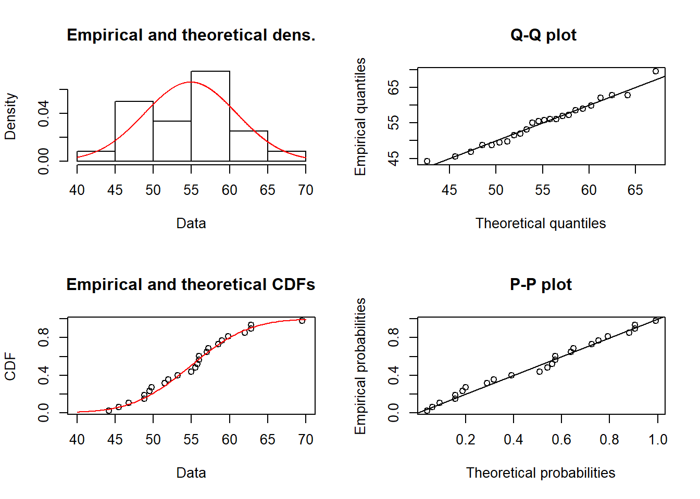
Šiame pavyzdyje raudonai žymima teorinė kreivė. Daugiau informacijos apie galimus parametrus skaitykite funkcijos dokumentacijoje (?plotdist).
Kiekvieno tipo grafiką galima nubraižyti atskirai naudojant funkcijas cdfcomp (sukauptojo santykinio dažnio diagrama lyginama su teorine tikimybių pasiskirstymo kreive), denscomp (teorinis tikimybių tankio grafikas lyginamas su empirine histograma), ppcomp (tikimybių-tikimybių – p-p – diagrama) ir qqcomp (kvantilių-kvantilių – q-q – diagrama). Šių funkcijų parametras addlegend kontroliuoja, ar braižyti legendą.
cdfcomp(modelis_normal, addlegend = FALSE)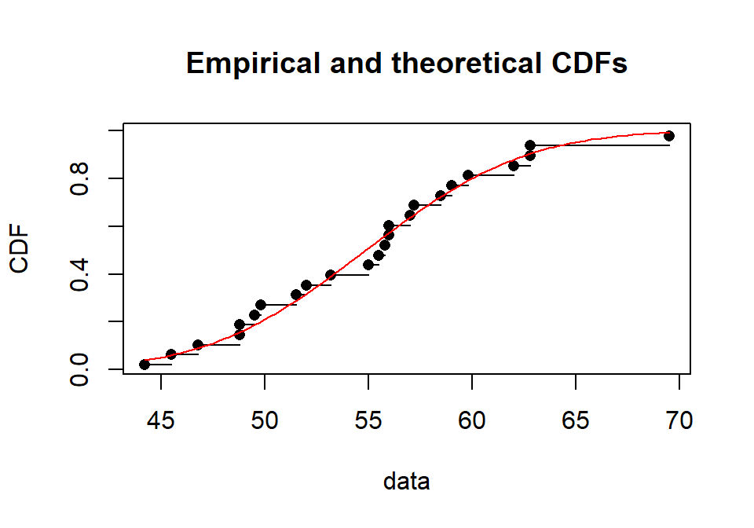
denscomp(modelis_normal)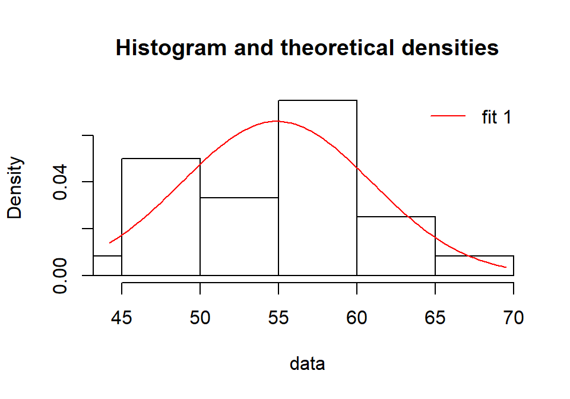
ppcomp(modelis_normal, addlegend = FALSE)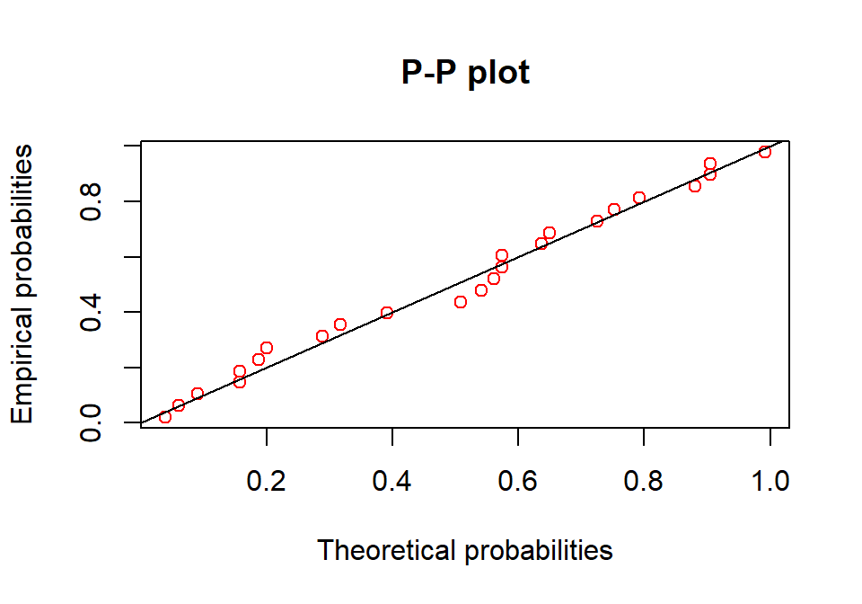
qqcomp(modelis_normal, addlegend = FALSE)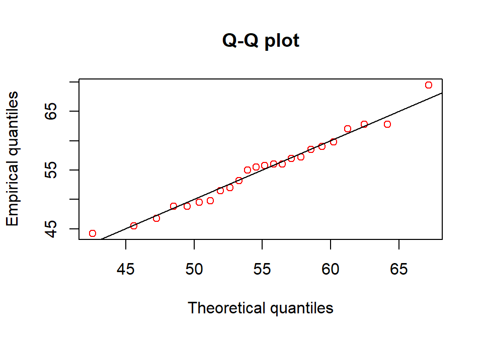
Analogiškai galime sukurti ir log-normalųjį ar kitokį modelį.
Užduotis 7.9
- Naudodami kodą:
fit_lognorm <- fitdist(derlius, distr = 'lnorm')Sukurkite log-normalųjį modelį ir jį patyrinėkite aukščiau išvardintomis funkcijomis (summary(), plot() ir kitomis). - Nuspręskite, kuris modelis – normalusis ar log-normalusis – šiems duomenims labiau tinka? (Tam papildomai reikia susikurti normalųjį modelį.)
7.9.2 Kelių modelių palyginimas (paketas fitdistrplus)
Palyginimas grafiškai
Duomenys toxocara – salose gyvenančių laukinių kačių parazitų tyrimas.
data(toxocara)
parazitu_skaicius <- toxocara$numberhist(parazitu_skaicius)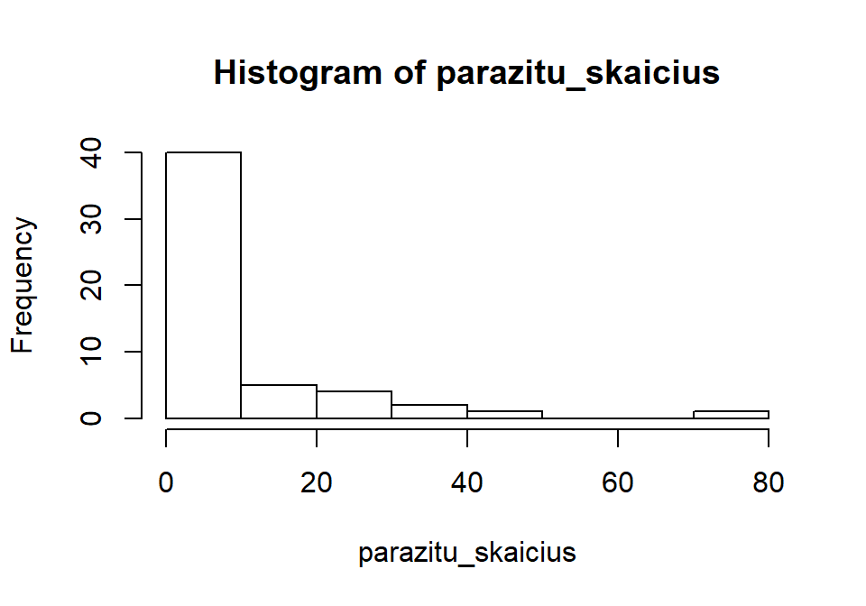
summary(parazitu_skaicius)
## Min. 1st Qu. Median Mean 3rd Qu. Max.
## 0.000 0.000 2.000 8.679 9.000 75.000Grafiškai patikrinkime, kuris teorinis modelis labiau tinka parazitų skaičių katėse aprašyti – Puasono ar neigiamas binominis?
# Modelių kūrimas
model_p <- fitdist(parazitu_skaicius, "pois")
model_nb <- fitdist(parazitu_skaicius, "nbinom")
# Sudarome modelių sąrašą
modeliu_sarasas <- list(model_p, model_nb)
# Susirašome modelių pavadinimus
pavadinimai <- c("Puasono", "Neigiamas binominis")Palyginame grafiškai:
plot(model_p)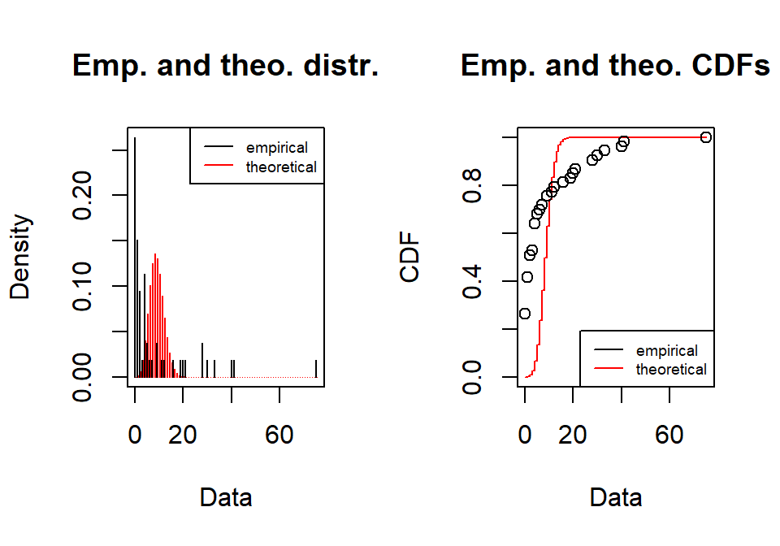
plot(model_nb)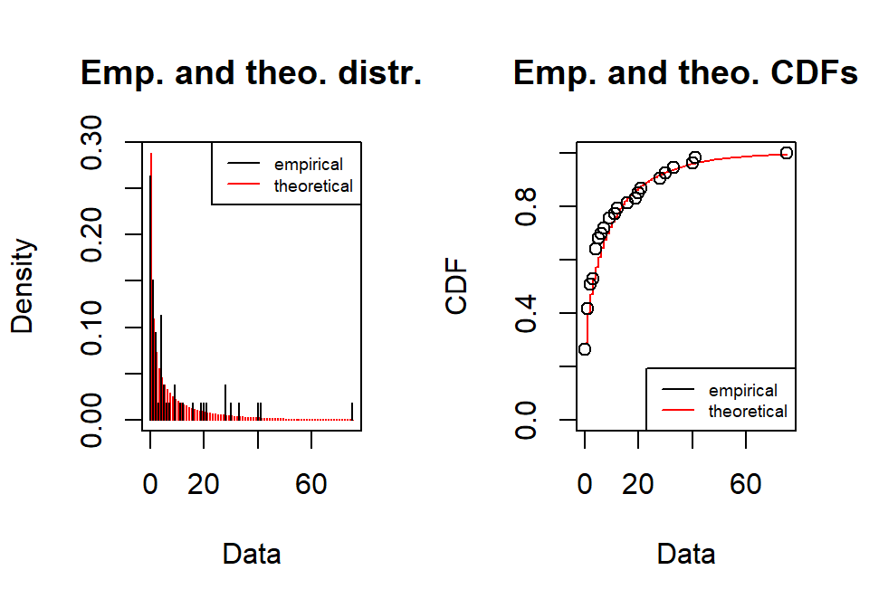
Lyginame grafiškai viename grafike (naudojant firdistrplus, diskretiesiems duomenims yra mažiau grafinio atvaizdavimo galimybių nei tolydiesiems):
cdfcomp(modeliu_sarasas, legendtext = pavadinimai)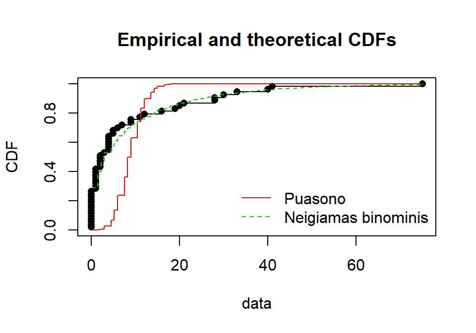
Atrodo, kad neigiamas binominis modelis (žalia linija) labiau atitinka empirinius duomenis (juodi taškai), nei Puasono modelis (raudona linija).
qqcomp(modeliu_sarasas, legendtext = pavadinimai)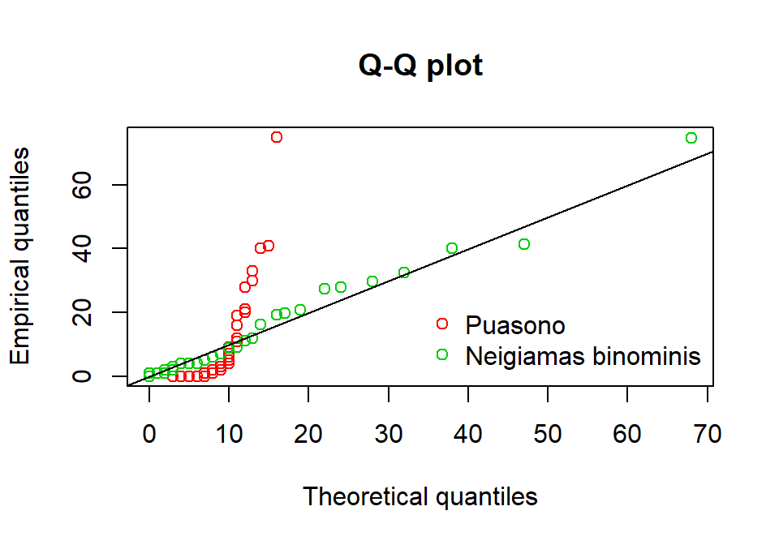
Jei išbandytumėte, pastebėtumėte, kad dvi kitos funkcijos nėra tinkamos mūsų turimiems diskretiesiems duomenims lyginti su teoriniais modeliais.
denscomp(modeliu_sarasas, legendtext = pavadinimai, demp = TRUE)
ppcomp(modeliu_sarasas, legendtext = pavadinimai)Palyginimas naudojant skaitines statistikas
Jei norite lyginti pagal skaitines statistikas, galite naudoti funkciją gofstat():
gofstat(modeliu_sarasas)
## Chi-squared statistic: 31256.96 7.48606
## Degree of freedom of the Chi-squared distribution: 5 4
## Chi-squared p-value: 0 0.1123255
## the p-value may be wrong with some theoretical counts < 5
## Chi-squared table:
## obscounts theo 1-mle-pois theo 2-mle-nbinom
## <= 0 14 0.009014207 15.295027
## <= 1 8 0.078236512 5.808596
## <= 3 6 1.321767215 6.845015
## <= 4 6 2.131297776 2.407815
## <= 9 6 29.827829221 7.835196
## <= 21 6 19.626223732 8.271110
## > 21 7 0.005631339 6.537242
##
## Goodness-of-fit criteria
## 1-mle-pois 2-mle-nbinom
## Akaike's Information Criterion 1017.067 322.6882
## Bayesian Information Criterion 1019.037 326.6288Tam, kad būtų paprasčiau suprasti, kur kuris modelis, galite nurodyti pavadinimus:
gofstat(modeliu_sarasas, fitnames = pavadinimai)
## Chi-squared statistic: 31256.96 7.48606
## Degree of freedom of the Chi-squared distribution: 5 4
## Chi-squared p-value: 0 0.1123255
## the p-value may be wrong with some theoretical counts < 5
## Chi-squared table:
## obscounts theo Puasono theo Neigiamas binominis
## <= 0 14 0.009014207 15.295027
## <= 1 8 0.078236512 5.808596
## <= 3 6 1.321767215 6.845015
## <= 4 6 2.131297776 2.407815
## <= 9 6 29.827829221 7.835196
## <= 21 6 19.626223732 8.271110
## > 21 7 0.005631339 6.537242
##
## Goodness-of-fit criteria
## Puasono Neigiamas binominis
## Akaike's Information Criterion 1017.067 322.6882
## Bayesian Information Criterion 1019.037 326.6288Atrodo, neigiamas binominis skirstinys tinka labiau. Kaip apie tai nusprendžiau rašoma 7.8 skyriuje.
7.9.3 Jei duomenys pateikti kaip dažnių lentelė (fitdistrplus)
Jei dirbate su diskrečiaisiais duomenimis ir turite dažnių lentelę, tada ją reikia pasiversti į vektorių naudojant funkciją rep().
Pavyzdys. Nuskaitome duomenis:
library(data.table)duomenys <- fread(
"x dažnis
0 26
1 43
2 48
3 42
4 29
5 6
6 5
8 1")Dažnių lentelę pasiverčiame į duomenų eilutę (vektorių):
vektorius <- rep(x = duomenys$x, times = duomenys$dažnis)Toliau su duomenis analizuojame įprastiniu būdu.
model_poisson <- fitdist(vektorius, distr = "pois")plot(model_poisson)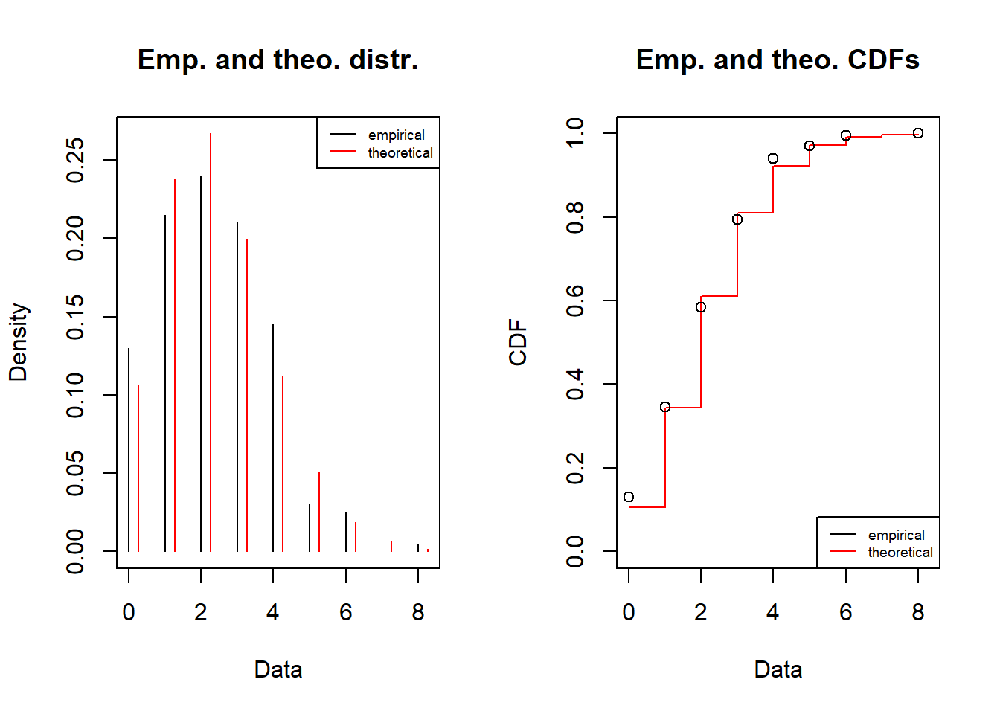
summary(model_poisson)
## Fitting of the distribution ' pois ' by maximum likelihood
## Parameters :
## estimate Std. Error
## lambda 2.245 0.1059481
## Loglikelihood: -358.8056 AIC: 719.6111 BIC: 722.9094coef(model_poisson)
## lambda
## 2.245Užduotis 7.10 Duota dažnių lentelė (k – kintamojo reikšmės, Freq – dažnis). Ją reikia pasiversti į vektorių ir patikrinti, kuris modelis – Puasono, binominis ar neigiamas binominis – labiau tinkamas. Naudokite paketą fitdistrplus.
| k | Freq |
|---|---|
| 0 | 79 |
| 1 | 72 |
| 2 | 38 |
| 3 | 10 |
| 5 | 1 |
Darbui su kategoriniais duomenimis patogesnė funkcija vcd::goodfit(). Deja, šių pratybų metu paketo vcd funkcijų nenagrinėsime.